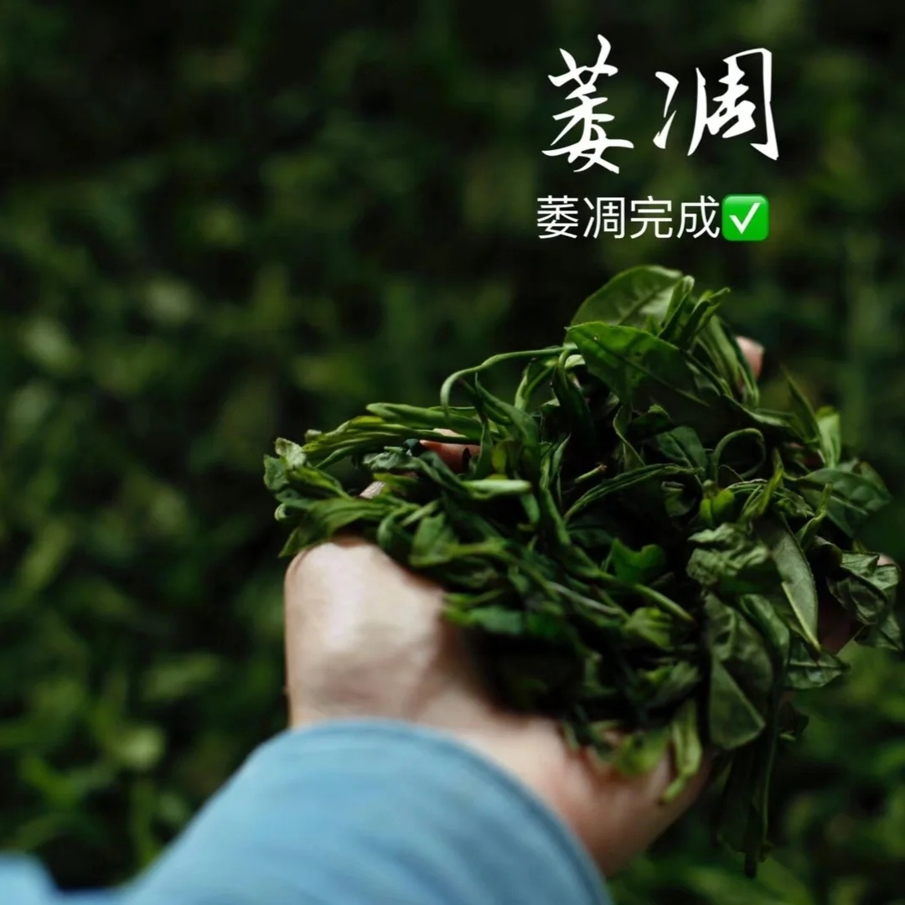
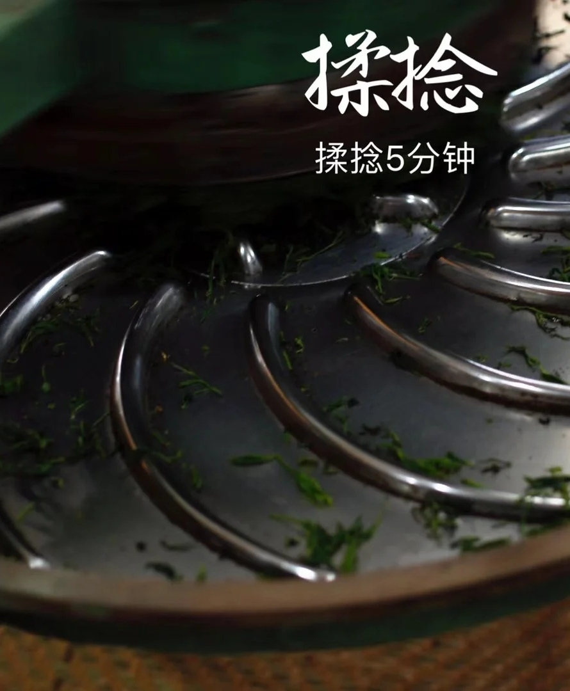
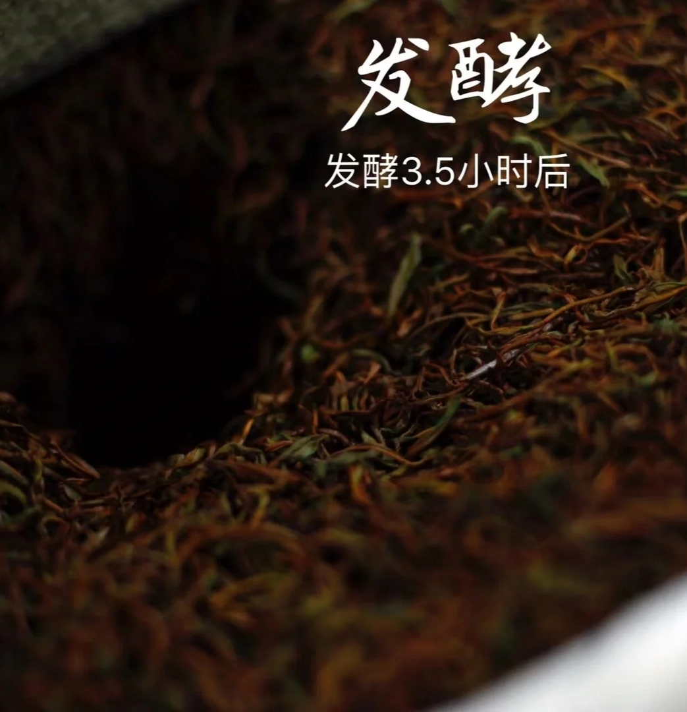
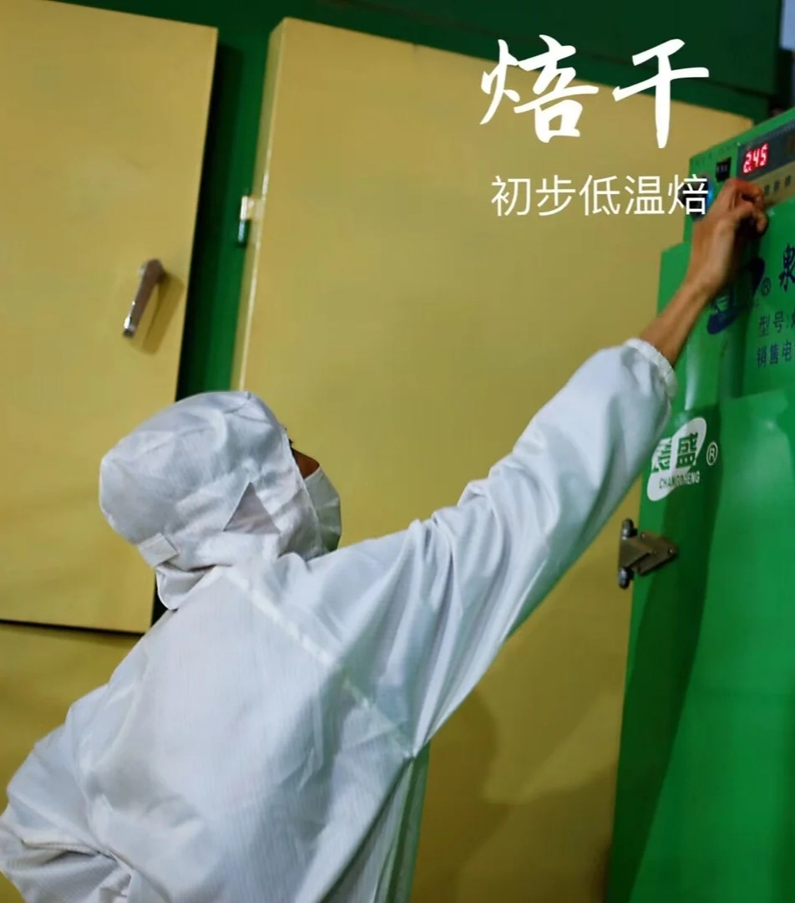

红茶制造工艺

1、 萎凋
萎凋是指鲜叶经过一段时间失水，使一定硬脆的梗叶成萎蔫凋谢状况的过程，是红茶初制的第一道工序。经过萎凋，可适当蒸发水分，叶片柔软，韧性增强，便于造形。此外，这一过程和使青草味消失，茶叶清香欲现，是形成红茶香气的重要加工阶段。
2、 揉捻
红茶揉捻的目的，与绿茶相同，茶叶在揉捻过程中成形并增进色香味浓度，同时，由于叶细胞被破坏，便于在酶的作用下进行必要的氧化，利于发酵的顺利进行。


3、 发酵
发酵是红茶制作独特阶段，经过发酵，叶色由绿变红，形成红茶红叶红汤的品质特点。其机理是叶子在揉捻作用下，组织细胞膜结构收到破坏，透性增大，使多酚类物质与氧化酶充分接触，在酶促作用下产生氧化聚合作用，其它化学成分亦相应发生深刻变化，使绿色的茶叶产生红变，形成红茶的色香味品质。
4、 焙干
焙干是将发酵好的茶坯，采用高温烘焙，迅速蒸发水分，达到保质干度的过程。其目的有三：利用高温迅速钝化酶的活性，停止发酵；蒸发水分，缩小体积，固定外形，保持干度以防霉变；散发大部分低沸点青草气味，激化并保留高沸点芳香物质，获得红茶特有的甜香。
